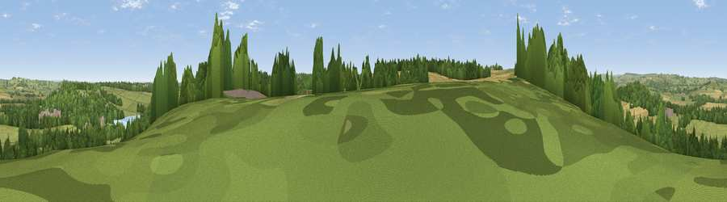

Viewpoint near Harewood
#29767 in England · top 54% of its area beats it · near HarewoodThe view, rendered

A 360° render of this exact spot computed from the terrain model, tree cover and land cover — summer colours, afternoon light, calibrated against photographs of famous viewpoints. Real trees, hedges and buildings will differ in detail.
The panorama
Grey silhouette: terrain skyline in each direction (720 bearings, Earth curvature and refraction included). Dashed green: skyline with trees (+15 m) and buildings (+8 m) as obstacles. Blue strip: how far the ground is visible on each bearing.
Where the view opens
Wedge length = distance to the farthest visible ground on that bearing (vegetation-aware). Rings at 10, 25 and 50 km.
What fills the view
39% grassland · 39% woodland · 19% cropland · 1% water ·
Angular shares of the visible panorama (visual magnitude), not map area. Landscape diversity 0.50 (0–1 Shannon).
Key numbers
More beautiful places nearby
The staircase of upgrades: each row has a higher view potential than everything closer. Driving times are estimates from straight-line distance, calibrated against real road routing — check an actual route before setting out.
| Place | Direction | Drive | Score |
|---|---|---|---|
| Viewpoint near Harewood | NNE · 1 km | ~4 min | 45.0 |
| The Bowshaws | W · 2 km | ~5 min | 59.6 |
| Viewpoint near Kirkby Overblow | NNE · 6 km | ~12 min | 63.5 |
| Viewpoint near North Rigton | NNW · 6 km | ~13 min | 66.6 |
| Rawdon Trig point | WSW · 9 km | ~18 min | 69.6 |
| Rawdon Billing | WSW · 9 km | ~18 min | 73.0 |
| Viewpoint near Otley | W · 10 km | ~19 min | 77.5 |
| Hood Hill | NNE · 43 km | ~62 min | 79.6 |
53.88884, -1.54238 · source: screening · position refined by local search. Computed location — check access rights before visiting.